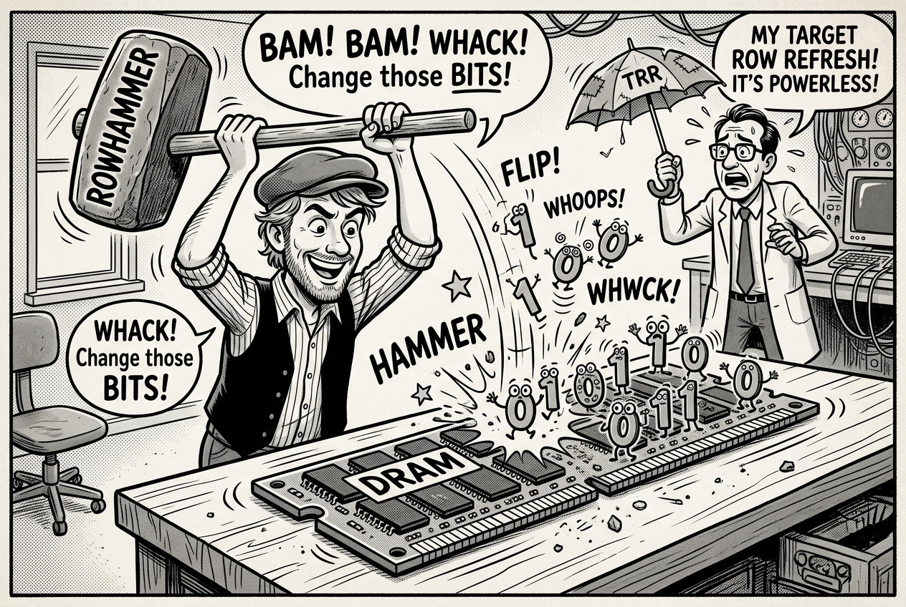

Autonomous Agents For Hardware Security
Since 2025, I have led research on evaluating and advancing the capabilities of autonomous AI agents in hardware and systems security....
Explore Project →Since 2025, I have led research on evaluating and advancing the capabilities of autonomous AI agents in hardware and systems security....
Explore Project →
Since 2023, I have investigated the architectural security and hardware isolation of modern confidential virtual machines (CVMs) for...
Explore Project →
Between 2019 and 2026, I developed hardware and software architectures to mitigate memory safety exploits and subsequent data exposure....
Explore Project →
Between 2018 and 2026, I investigated the physical and architectural foundations of Rowhammer vulnerabilities in dynamic random-access...
Explore Project →
From 2018 to 2024, I conducted research on developing tools and techniques for the automated discovery of vulnerabilities in cryptographic...
Explore Project →
From 2017 to 2023, I researched new side-channel and speculative execution vulnerabilities in hyperscalar x86-64 CPUs. These processors...
Explore Project →
From 2016 to 2020, I researched software-based side-channel analysis tools for Intel Software Guard Extensions (SGX), one of the first...
Explore Project →